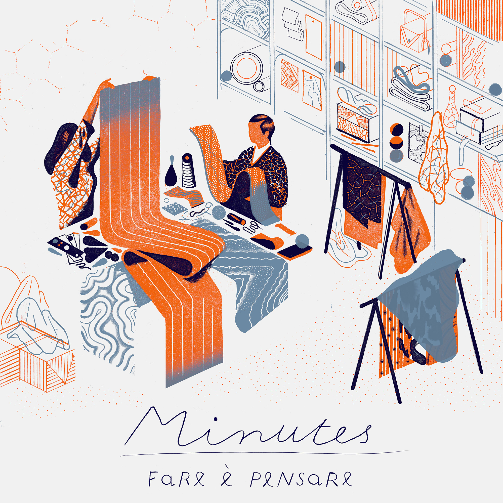
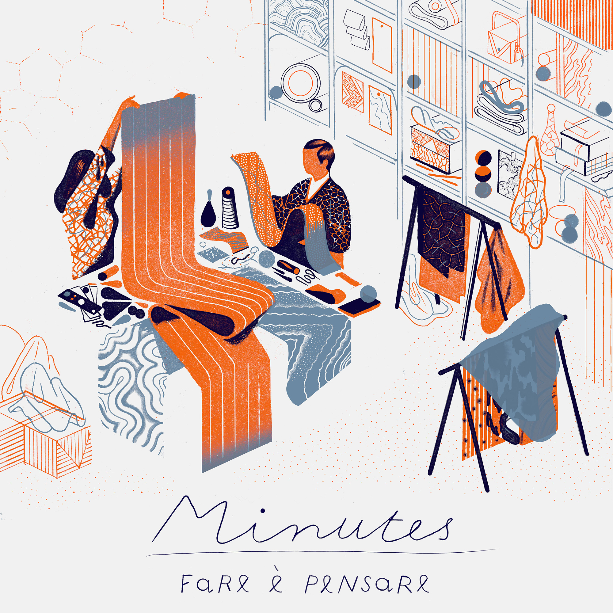

Icinori
Mayumi Otero and Raphael Urwiller’s prolific outpouring of work makes a very good case for living somewhere as they do in a quiet suburb just outside of Paris. They met as art students in Strasbourg a decade ago and now spend their days drawing, writing, painting, publishing, collecting, and, in their words, “expanding their inner universe.” Their work is a breathlessly wonderful, modern folkloric study of scenes and characters that are at once of our world and from another galaxy altogether. Together, they love solving problems, getting lost in research, coming up with ideas, experimenting with new working methods, and, most importantly, finding joy and happiness from the result.
“Always be on the move, intellectually and spatially,” they say. “In a rare and exceptional moment, something incredible appears in a drawing; it’s pure magic, and it is precious and extraordinary. Most of our work is looking for those moments of grace.” Which is something we predict happens rather regularly.


 
